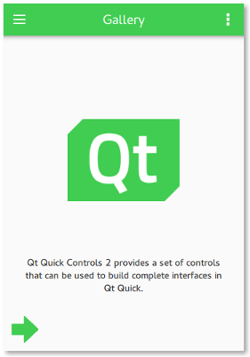

Best Practices for QML and Qt Quick
Despite all of the benefits that QML and Qt Quick offer, they can be challenging in certain situations. The following sections elaborate on some of the best practices that will help you get better results when developing applications.
Custom UI Controls
A fluid and modern UI is key for any application's success in today's world, and that's where QML makes so much sense for a designer or developer. Qt offers the most basic UI controls that are necessary to create a fluid and modern-looking UI. It is recommended to browse this list of UI controls before creating your own custom UI control.
Besides these basic UI controls offered by Qt Quick itself, a rich set of UI controls are also available with Qt Quick Controls. They cater to the most common use cases without any change, and offer a lot more possibilities with their customization options. In particular, Qt Quick Controls provides styling options that align with the latest UI design trends. If these UI controls do not satisfy your application's needs, only then it is recommended to create a custom control.
Related Information
Coding Conventions
Bundle Application Resources
Most applications depend on resources such as images and icons to provide a rich user experience. It can often be a challenge to make these resources available to the application regardless of the target OS. Most popular OS-es employ stricter security policies that restrict access to the file system, making it harder to load these resources. As an alternative, Qt offers its own resource system that is built into the application binary, enabling access to the application's resources regardless of the target OS.
For example, consider the following project directory structure:
project
├── images
│ ├── image1.png
│ └── image2.png
├── project.pro
└── qml
└── main.qml
The following entry in project.pro ensures that the resources are built into the application binary, making them available when needed:
RESOURCES += \
qml/main.qml \
images/image1.png \
images/image2.png
A more convenient approach is to use the wildcard syntax to select several files at once:
RESOURCES += \
$$files(qml/*.qml) \
$$files(images/*.png)
This approach is convenient for applications that depend on a limited number of resources. However, whenever a new file is added to RESOURCES using this approach, it causes all of the other files in RESOURCES to be recompiled as well. This can be inefficient, especially for large sets of files. In this case, a better approach is to separate each type of resource into its own .qrc file. For example, the snippet above could be changed to the following:
qml.files = $$files(*.qml) qml.prefix = /qml RESOURCES += qml images.files = $$files(*.png) images.prefix = /images RESOURCES += images
Now, whenever a QML file is changed, only the QML files have to be recompiled.
Sometimes it can be necessary to have more control over the path for a specific file managed by the resource system. For example, if we wanted to give image2.png an alias, we would need to switch to an explicit .qrc file. Creating Resource Files explains how to do this in detail.
Related Information
Separate UI from Logic
One of the key goals that most application developers want to achieve is to create a maintainable application. One of the ways to achieve this goal is to separate the user interface from the business logic. The following are a few reasons why an application's UI should be written in QML:
- Declarative languages are strongly suited for defining UIs.
- QML code is simpler to write, as it is less verbose than C++, and is not strongly typed. This also results in it being an excellent language to prototype in, a quality that is vital when collaborating with designers, for example.
- JavaScript can easily be used in QML to respond to events.
Being a strongly typed language, C++ is best suited for an application's logic. Typically, such code performs tasks such as complex calculations or data processing, which are faster in C++ than QML.
Qt offers various approaches to integrate QML and C++ code in an application. A typical use case is displaying a list of data in a user interface. If the data set is static, simple, and/or small, a model written in QML can be sufficient.
The following snippet demonstrates examples of models written in QML:
model: ListModel {
ListElement { name: "Item 1" }
ListElement { name: "Item 2" }
ListElement { name: "Item 3" }
}
model: [ "Item 1", "Item 2", "Item 3" ]
model: 10
Use C++ for dynamic data sets that are large or frequently modified.
Interacting with QML from C++
Although Qt enables you to manipulate QML from C++, it is not recommended to do so. To explain why, let's take a look at a simplified example.
Pulling References from QML
Suppose we were writing the UI for a settings page:
import QtQuick 2.13 import QtQuick.Controls 2.13 Page { Button { text: qsTr("Restore default settings") } }
We want the button to do something in C++ when it is clicked. We know objects in QML can emit change signals just like they can in C++, so we give the button an objectName so that we can find it from C++:
Button { objectName: "restoreDefaultsButton" text: qsTr("Restore default settings") }
Then, in C++, we find that object and connect to its change signal:
#include <QGuiApplication> #include <QQmlApplicationEngine> #include <QSettings> class Backend : public QObject { Q_OBJECT public: Backend() {} public slots: void restoreDefaults() { settings.setValue("loadLastProject", QVariant(false)); } private: QSettings settings; }; int main(int argc, char *argv[]) { QGuiApplication app(argc, argv); QQmlApplicationEngine engine; engine.load(QUrl(QStringLiteral("qrc:/main.qml"))); if (engine.rootObjects().isEmpty()) return -1; Backend backend; QObject *rootObject = engine.rootObjects().first(); QObject *restoreDefaultsButton = rootObject->findChild<QObject*>("restoreDefaultsButton"); QObject::connect(restoreDefaultsButton, SIGNAL(clicked()), &backend, SLOT(restoreDefaults())); return app.exec(); } #include "main.moc"
With this approach, references to objects are "pulled" from QML. The problem with this is that the C++ logic layer depends on the QML presentation layer. If we were to refactor the QML in such a way that the objectName changes, or some other change breaks the ability for the C++ to find the QML object, our workflow becomes much more complicated and tedious.
Pushing References to QML
Refactoring QML is a lot easier than refactoring C++, so in order to make maintenance pain-free, we should strive to keep C++ types unaware of QML as much as possible. This can be achieved by "pushing" references to C++ types into QML:
int main(int argc, char *argv[]) { QGuiApplication app(argc, argv); Backend backend; QQmlApplicationEngine engine; engine.rootContext()->setContextProperty("backend", &backend); engine.load(QUrl(QStringLiteral("qrc:/main.qml"))); if (engine.rootObjects().isEmpty()) return -1; return app.exec(); }
The QML then calls the C++ slot directly:
import QtQuick 2.13 import QtQuick.Controls 2.13 Page { Button { text: qsTr("Restore default settings") onClicked: backend.restoreDefaults() } }
With this approach, the C++ remains unchanged in the event that the QML needs to be refactored in the future.
In the example above, we set a context property on the root context to expose the C++ object to QML. This means that the property is available to every component loaded by the engine. Context properties are useful for objects that must be available as soon as the QML is loaded and cannot be instantiated in QML.
For a quick guide to choosing the correct approach to expose C++ types to QML, see Choosing the Correct Integration Method Between C++ and QML.
Related Information
Using Qt Quick Layouts
Qt offers Qt Quick Layouts to arrange Qt Quick items visually in a layout. Unlike its alternative, the item positioners, the Qt Quick Layouts can also resize its children on window resize. Although Qt Quick Layouts are often the desired choice for most use cases, the following dos and don'ts must be considered while using them:
Dos
- Use anchors or the width and height properties to specify the size of the layout against its non-layout parent item.
- Use the Layout attached property to set the size and alignment attributes of the layout's immediate children.
Don'ts
- Do not define preferred sizes for items that provide implicitWidth and implicitHeight, unless their implicit sizes are not satisfactory.
- Do not use anchors on an item that is an immediate child of a layout. Instead, use
Layout.preferredWidthandLayout.preferredHeight:RowLayout { id: layout anchors.fill: parent spacing: 6 Rectangle { color: 'azure' Layout.fillWidth: true Layout.minimumWidth: 50 Layout.preferredWidth: 100 Layout.maximumWidth: 300 Layout.minimumHeight: 150 Text { anchors.centerIn: parent text: parent.width + 'x' + parent.height } } Rectangle { color: 'plum' Layout.fillWidth: true Layout.minimumWidth: 100 Layout.preferredWidth: 200 Layout.preferredHeight: 100 Text { anchors.centerIn: parent text: parent.width + 'x' + parent.height } } }
Note: Layouts and anchors are both types of objects that take more memory and instantiation time. Avoid using them (especially in list and table delegates, and styles for controls) when simple bindings to x, y, width, and height properties are enough.
Related Information
Type Safety
When declaring properties in QML, it's easy and convenient to use the "var" type:
property var name property var size property var optionsMenu
However, this approach has several disadvantages:
- If a value with the wrong type is assigned, the error reported will point to the location of the property declaration, as opposed to the location where the property was assigned to. This slows down the development process by making it more difficult to track down errors.
- Static anaylsis to catch errors like the ones mentioned above is not possible.
- The actual underlying type of the property is not always immediately clear to the reader.
Instead, always use the actual type where possible:
property string name
property int size
property MyMenu optionsMenu
Performance
For information on performance in QML and Qt Quick, see Performance Considerations And Suggestions.
Tools and Utilities
For information on useful tools and utilies that make working with QML and Qt Quick easier, see Qt Quick Tools and Utilities.
Scene Graph
For information on Qt Quick's scene graph, see Qt Quick Scene Graph.
Scalable User Interfaces
As display resolutions improve, a scalable application UI becomes more and more important. One of the approaches to achieve this is to maintain several copies of the UI for different screen resolutions, and load the appropriate one depending on the available resolution. Although this works pretty well, it adds to the maintenance overhead.
Qt offers a better solution to this problem and recommends the application developers to follow these tips:
- Use anchors or the Qt Quick Layouts module to lay out the visual items.
- Do not specify explicit width and height for a visual item.
- Provide UI resources such as images and icons for each display resolution that your application supports. The Qt Quick Controls gallery example demonstrates this well by providing the
qt-logo.pngfor@2x,@3x, and@4xresolutions, enabling the application to cater to high resolution displays. Qt automatically chooses the appropriate image that is suitable for the given display, provided the high DPI scaling feature is explicitly enabled. - Use SVG images for small icons. While larger SVGs can be slow to render, small ones work well. Vector images avoid the need to provide several versions of an image, as is necessary with bitmap images.
- Use font-based icons, such as Font Awesome. These scale to any display resolution, and also allow colorization. The Qt Quick Controls Text Editor example demonstrates this well.
With this in place, your application's UI should scale depending on the display resolution on offer.
